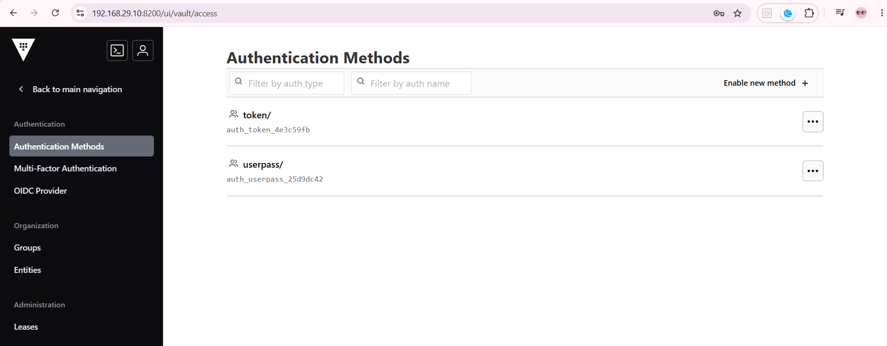
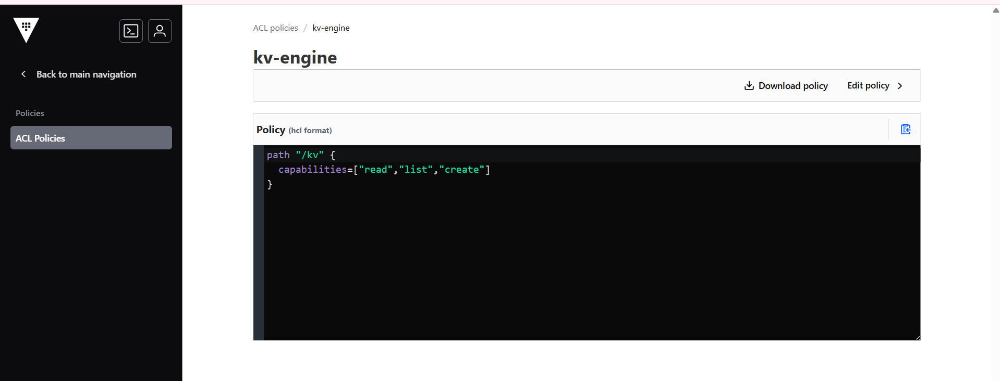
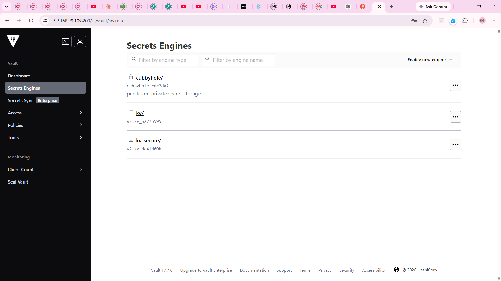
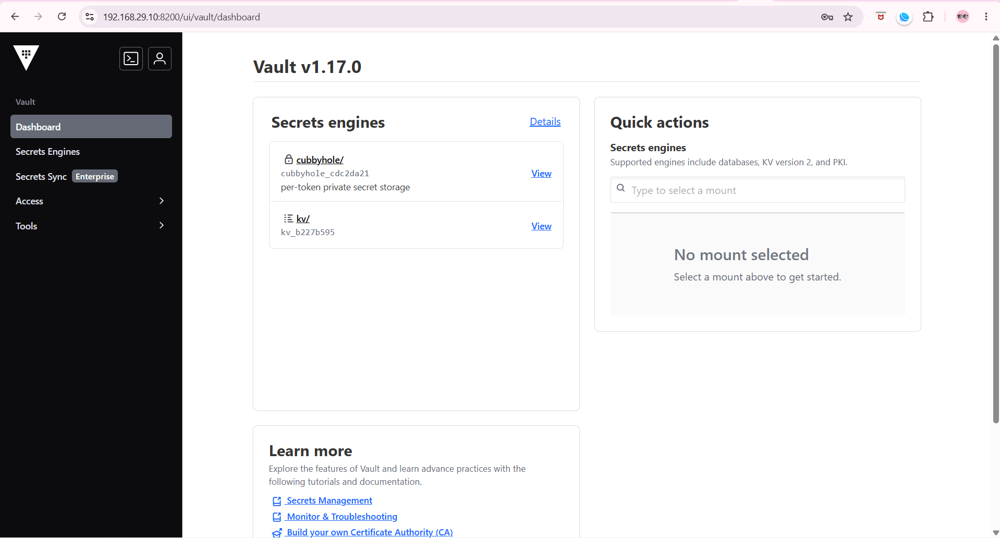

UserPass authentication
Till now we were using the token for authentication on vault which is default mechanism but this is not recommended for users as no one gonna remember these tokens so we will use username and password.
vault auth help
to see basic auth commands i.e. - enable - disable - help - list - move - tune
check which auth methods are enable
Output:Path Type Accessor Description Version
---- ---- -------- ----------- -------
token/ token auth_token_4e3c59fb token based credentials n/a
to see basic usage of authentication method
Output:Usage: vault login -method=userpass [CONFIG K=V...]
The userpass auth method allows users to authenticate using Vault's
internal user database.
Authenticate as "sally":
$ vault login -method=userpass username=sally
Password (will be hidden):
Authenticate as "bob":
$ vault login -method=userpass username=bob password=password
Configuration:
password=<string>
Password to use for authentication. If not provided, the CLI will prompt
for this on stdin.
username=<string>
Username to use for authentication.
enable the authentication method
as we have seen only token authentication method is enabled till now

Output:now auth method is enabled
Path Type Accessor Description Version
---- ---- -------- ----------- -------
token/ token auth_token_4e3c59fb token based credentials n/a
userpass/ userpass auth_userpass_25d9dc42 n/a n/a
creating the user
before creating the user create the acl policy that user needs to be associated. this make sure the user created has least privilage or minimal access.
Default acl policy is attached to all by default.
Output:user Login
exported VAULT_TOKEN takes precedince we were working on cli using root till now even if we do login it will not impact as root token will be used for request. so unset the value first.
WARNING! The VAULT_TOKEN environment variable is set! The value of this
variable will take precedence; if this is unwanted please unset VAULT_TOKEN or
update its value accordingly.
To verify that root is logged out active
Output:Error reading auth/userpass/users/sachin: Error making API request.
URL: GET https://192.168.29.10:8200/v1/auth/userpass/users/sachin
Code: 403. Errors:
* 1 error occurred:
* permission denied
Success! You are now authenticated. The token information displayed below
is already stored in the token helper. You do NOT need to run "vault login"
again. Future Vault requests will automatically use this token.
Key Value
--- -----
token hvs.CAExxxxxxxxxxxxxxxxxxxxxxxxxxxxxxxxxxx
token_accessor n4TK5lzTXciWLbB41mzXwyFz
token_duration 768h
token_renewable true
token_policies ["default" "kv-engine"]
identity_policies []
policies ["default" "kv-engine"]
token_meta_username sachin
A temperory token is created and registered by default internal all authentication methods generate a token to authenticate but these are shortlived and session based. on each login new temporary token is created. even when logged in via UI
this token gets stored at
until logged out.
limited user access as per the policy
user get access to /kv path based on the policy attached not kv_secure whereas root can see it all.
policy

root access

user access
